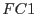

XMM-Newton Science Analysis System
epexposure (epexposure-0.14) [xmmsas_20170112_1337-16.0.0]
Comments
- Handling of out-of-time events: the number of out-of-time
events depends on the spatial selection, i.e. on the amount of events
which are assumed to originate from the target source, as well as
on the readout mode. So this effect can not be handled as a livetime factor
in an early stage of the pipeline processing but needs to be addressed as
a mode-dependent PSF effect by higher SAS tasks.
- It has to be verified in orbit that there is a flat MIP distribution
before one just can use the NDISCLIN counter to calculate . If not this
will imply the MIP deadtime correction has to be done properly on a
column-by-column basis by looking at the Discarded Lines Map which will be
transmitted at least once at the end of each observation.
- Handling of counting mode: One will need to check the EPDH counter
to see how much time of an exposure was observed in counting mode (and hence
did not produce any scientific data and entries in an event list).
This deadtime will be stored via a good time interval (GTI)
by the task epframes.
- Document EPIC-EST-OP-002, Sect.14.7 mentions the scientific data
structures `First and Second Lost Synch Data' which are related to a loosing
of the nominal scientific data flow. It needs to be verified that such a gap
in the scientific data flow is addressed in the ODF creation already.
- For (e.g.) timing analysis there is a need to not only compute
the statistical livetime factors but also to create a list of good time
intervals.
epframes
already creates such GTIs corresponding to the flagged frames.
But also the deadtimes due to the chopper, the counting mode and CCD readout
(which is significant for burst and small window modes) should be accessible
as GTIs to be created by higher SAS tasks.
XMM-Newton SOC/SSC -- 2017-01-12